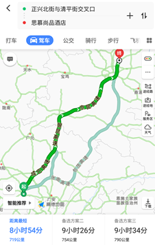
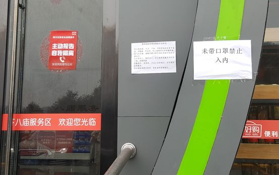
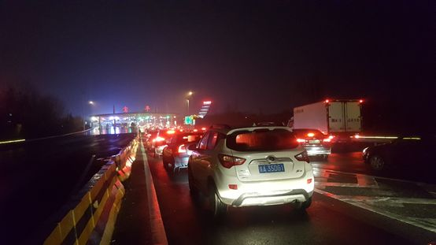
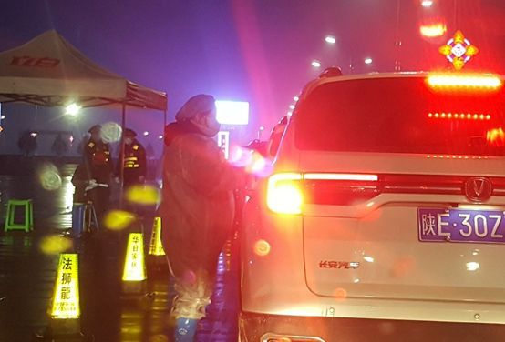
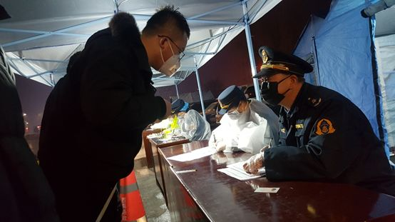
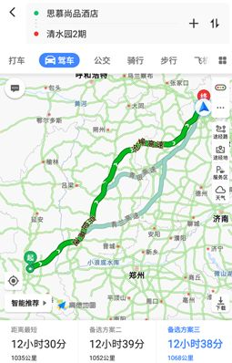
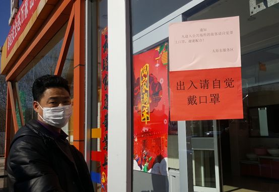
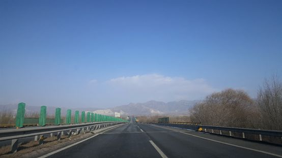
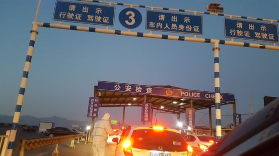
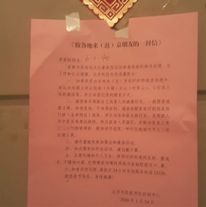

记者手记|疫情中的货车司机：每天只吃一顿饭
原文链接 备份链接 【财新网】（记者 包志明）2月3日下午16时，31岁的货车司机王辉在上海浦东机场附近的货仓装满物资，就和弟弟的车一前一后驶上了开往武汉的救援之路。 因为新冠肺炎疫情的发展，武汉已经“封城”11天，900万武汉居民的 …

今天来信的作者老家在四川遂宁，新型冠状病毒疫情爆发后的 1 月 31 日，他接到单位要求，开始了 1780 公里的返京之旅。一路上，他用照片和文字记录下了沿途经历。

我的三千里自驾返京记
撰文：北红七哥
1 月 31 日中午，单位通知要求，离京到外地休假的员工，除身处湖北省之外，即日返京，到京后自我隔离 14 天。我决定 2 月 1 日从四川遂宁老家单独自驾 1780 公里独自返京。
在这里记下沿途所见所闻所思，留作这段特殊日子的记念，也为准备从外地返京的朋友提供公路出行参考。
川陕之旅
我计划两天从四川开到北京，途经陕西、山西、河北。返京第一天规划路程相对简单。出遂宁沿着遂西高速——成巴高速——银昆高速——京昆高速往东北方向开，主要经过巴中、汉中，到西安附近停歇一晚。

▲选择首日返京路线，准备到西安附近住一晚
2 月 1 日 9 点 40，开车从遂宁老家出发，驶上返京之路。高速路入口没有检查，一路顺利，车辆较少，一口气跑了 204 公里，到了巴中的下八庙服务区。

▲未戴口罩禁止入内，这是高速服务区的标配。（图中有个错别字）

▲加油员杨梅忙得跑着加油和收费，她值班同事轮换着吃午饭
加油的车不多，时值中午，只有一个加油员跑进跑出。加油员叫杨梅，在四川交投中油能源有限公司工作 5 年了，大年二十九到这里上岗，已连续工作 9 天。她家在附近 60 多公里外的南江，春节也没法和家人团圆。许多这样默默工作的普通人，支持着社会的正常运转。
下半 5 点半，我进入秦岭服务区。来往车辆都停在靠近高速的平台停车场，旅客要步行 150 米左右才能进入超市，或者上厕所。到这里停歇的车辆不少，平台停车场估计停放着 50 多台辆车。这种停车区和服务核心区隔离的做法，也是防疫措施之一。
在服务区，我准备订晚上的住宿酒店。看了微信和网上的信息，了解到西安入城的高速入口纷纷设岗防疫检查，不知会花多少时间，遂决定干脆不进西安住宿，再往前开一点，方便次日一早出行。于是寻找当晚落脚点，最后定在陕西渭南市的富平县，这是习仲勋的家乡。

▲到陕西富平高速出口，车排长龙，接受防疫检查。
一路畅通，而且一路平安，大家都开得小心翼翼，沿途没有发现一起事故。晚上 7:40，驶出西禹高速富平出口，堵车了，不用问也知道，是接受防疫检查。不到 300 米的路段，前后排起长龙，5 分钟到 8 分钟挪动几个车位。
大家耐心等候，半小时、一小时……看上去车不太多，不知为何如此慢。上网查情况，华山网 1 月 27 日有报道——在西禹高速的富平出口处，运政、交通、卫生、林业等部门组成的联合检查组正在这里对过往车辆进行一一检查。这么多相关部门联动，力度很大，但耗时也不会短。我估算排在前面到检查岗如果有 30 辆的话，每 5 分钟过检一辆，轮到我得要 150 分钟，就是 2 个半小时。
驶出高速的车辆先排成三队四队，临近出口发现只有两个车道通行，不敢挤的车就老进不了通道。我排在最左侧一队，排了一个半小时，发现需要与右侧车队共进一个通道。前面一辆车迟疑着不敢上前，右侧的车鱼贯而进。两个高速路工作人员穿着反光服，在前面 50 米站着。我过去表明，请他们协助疏导一下排队秩序，排的两个车队拉链式合并为一队。
其中一位说你们自己协调，问我是不是插队了，说本来两个车道，你们自己排成三队。又叫我去打开双闪，我依照而行，同时给两个车队前后 5 辆车同时打招呼，请大家配合一下，拉链式让行。几位车主都戴着口罩，谁也没吭声，但都点点头默认了。这样终于进了车道，继续蜗牛般挪动。
无聊之时，听广播，看能否了解本地防疫情况。搜了半天，却只有一个推荐“强力脑心康”的卖药节目。“你只要花 1192 元，买两个疗程，再送两个疗程……”这种不靠谱的卖药广播，沿路常收听到。如果这时有当地电台提供本地防疫信息，尤其是给堵在高速出口的车主一些实用信息，岂不是为民分忧？

▲检查站工作人员全幅武装，为乘客测体温。

▲联合防疫检查岗，5 个工作人员查验填写乘车人资料。
到了联合防疫检查站，检查人员给车上人测体温，问车上有没有生肉活禽，然后让我拿上驾驶证、身份证去登记，说明从哪里来，到哪里去。一位上了年纪的检查人员听我说要去北京。“怎么开到我们这里来了？”他有些纳闷。我说从四川遂宁来，中途在这里住一晚。“工商局都要求酒店不开门了，你到哪里住呢？”我说已经预定好酒店，就在富平车站大街东段。他知道这个酒店，于是通过。可能登记时间太长，他看不清身份证号码，叫每个人念给他记。
从 17:42 我驶出高速开始排队，到通过检查驶进富平城，时间是 22:21，用了两个小时 40 分钟。这等候的 300 米，感觉是世界上最长的距离。驶入富平城，街上空无一人。大街两侧一长溜灯饰写着“富庶太平”，是县名的寓意。

▲城里到处可见“富庶太平”的字样。
穿越晋冀
在宾馆，考虑次日返京行程，想选择一条可能车更少的路线，远点也不怕，如果遇到防疫检查，可能等候时间更短些。最后决定选择这条路线：京昆高速——青银高速——二广高速——忻州线城高速——沧榆高速——京昆高速——西六环——北五环，全程 1068 公里，从富平出发，经过山西临汾、太原、忻州、五台山，再过河北保定阜平，经北京韩村河入京。

▲我最终选择较远但可能车少的路线返京。
2 月 2 日 6 点半，开车出发。黑乎乎，空荡荡，酒店大楼上方一个街舞俱乐部的大招牌大亮着，一楼旁边一个亮着的灯牌显示 7 楼有瑜珈馆。跳街舞、练瑜珈，这也许是富平县正常生活秩序的写照。在我们遂宁老家，母亲参加的广场舞早在春节前就主动停了。也许跳舞是太平世界的标志，想起前两天在网上看过电影《乔乔的异想世界》，德国小男孩乔乔问藏在他家的犹太女孩，如果战争停止了，她想做的第一件是什么？“跳舞”。当美国旗帜从城市大街上飘过，他们站在家门口，开始跳起舞来……
车上高速，驶进富平服务区加满一箱油。便利店显示屏横幅打出：“向战斗在抗击疫情一线的医务工作者致敬”，三个女子戴着口罩值班，她们也是防疫抗疫的后勤保障的奉献者，每天面对天南地北过往客，也不是没有感染风险的。

▲提醒加油不要下车。
8 点半左右，经过龙门黄河大桥，从陕西进入山西。按照国家对拆除省界高速收费站的要求，龙门黄河大桥收费站于 2019 年 9 月 30 日拆除。这座大桥是京昆高速上连接晋陕两省的交通要道，曾有新闻报道说平均日均车流量 2 万余辆。但这个春节，车流陡降。

▲龙门黄河大桥是陕晋省界，大桥高速收费站在 2019 年国庆前拆除

▲太原东服务区，经值班人员阻止提醒后，他回车上戴口罩后进入卫生间。
服务区男卫生间贴着醒目字样：“文明之路，只需半步”。便溺的文明还要时刻提醒，厕所革命还要国家领导人操心。要达到生态文明，还差几步?
这次新冠病毒爆发，也是对国人“吃的文明”的拷问。这与滥吃野味相关，总有一些人管不好自己的嘴。像学名黄胸鹀俗称“禾花雀”的鸟儿，从俄罗斯西伯利亚飞到中国南方越冬，但沿途被大量捕杀，许多被催肥后杀死，送到广东等地的野味餐桌。2017 年世界自然保护联盟更新濒危物种红色名录，黄胸鹀的评级被从“濒危”升级为“极危”，而在 2013 年以前还属“无危”。我在河南黄河湿地保护区见到过几只黄胸鹀，它们已学会远离人群，有人走近 200 米以内就飞走了。遗憾的是，我国的野生动物保护名录是 1988 年公布的，除了 2003 年将麝由二级保护动物升为一级之外，到现在已 30 多年了，几乎没有更新。黄胸鹀仍未被列入一级或二级保护动物，只被归于“三有动物”（国家保护的有重要生态、科学、社会价值的陆生野生动物），与麻雀一个级别。说不定未来哪年，黄胸鹀就被吃得灭绝了。这次疫情发生后，国家开始严厉打击非法野生动物捕杀和交易，也是痛定思痛吧。
▲2019 年国庆期间，在河南黄河湿地偶见的濒危黄胸鹀（禾花雀）。近 40 年间，这种鸟儿数量缩减九成

▲驶向太行山，前不见车，后不见人。
高速公路穿过太行山区，山峰连绵，视野中半天不见一辆同行车，感觉诡异。广播里报道各地为武汉加油，向湖北捐助防疫物资，空军动用军机运送紧急物资，还有一些国外捐助的物资涌来。想起昨晚看微信：日本汉语水平考试 HSK 事务局捐赠了 20000 个口罩和一批红外体温计给湖北高校。在捐赠纸箱的标签上，写着 8 个汉字：山川异域，风月同天。
这 8 个字颇有来头，早在 1200 多年前，它们就绣在日本长屋王送给唐朝僧人的千件袈裟上，后面还有两句：寄诸佛子，共结来缘。记载鉴真事迹的《唐大和尚东征记》载，鉴真大师被此偈打动，决心东渡弘法。前些天日本从武汉撤侨，100 多人同机，发现 3 名新冠病毒肺炎确诊病例。大疫之前，中日之间情义相牵，共同面对考验。
快捷进京
沿京昆高速一路疾行，快到 6 点时，进入北京市界，进京安检站让车辆慢下来。暮色渐浓，灯光晕黄。穿着防护服的检查人员，手持测温计给车上人员量体温，没有别的检查，不到 17 分钟，就通过进京检查站。

▲进北京界，车上人全部检测体温
进北京界比预想的快。收音机里，熟悉的京腔让我心安。没有一个冬天不能逾越，17 年前的非典我也经历过，也许病毒在夏天高温时会自行消亡。一个高中同学在群里“瞎想”分析说，病毒如果把人类宿主杀死了，自己也活不了，新冠毒性应该会减弱，传染性增强，以后可能转为普通的流感病毒。我觉得说得有道理，但时间才是检验疫情的唯一标准。
没想到进京后还有第二道检查岗。所有进京车辆被导入韩村河服务区，检查人员逐一接过身份证，机器扫瞄，几秒过一车。这种效率，比有的检查站手机登记省事多了。

▲检查人员用机器扫瞄身份证。
晚上 7 点多，驶进京城，夜色阑珊，车流如织。回首自驾两天，从川中小城，到繁华京城，穿越三千里，一路奔驰。吾土吾民，没人不爱自己的祖国。爱她，请让她更健康；爱她，请让她的人民更安心。

▲家里门上贴着返京通知
回家进社区，不知会遇到什么样的检查。前些日子，微信朋友圏流传着种种遭遇——很多外地返京的租房者被阻挡在社区门外，必须外出隔离 14 天提交医院开的健康证明才能进入。2 月 1 日传来最新消息，北京市政府副秘书长明确表示，除从湖北返京的人员外，任何社区（村）和物业部门，没有权利自行阻止体温检测正常的返京人员进入社区。
家住昌平立水桥附近，车近小区门口，真有防疫检查岗，两个人员站在一个桌前，检查进出小区的行人，小区大门车辆出入口自动识别车牌。
家里门上贴着一张粉纸，是居委会转发北京市疾控中心的一封信，要求返京人员告知居委会，留下联系方式，并且自行观察两周。我马上给居委会打电话，对方登记了我的车牌和联系方式。又给单位汇报了到京情况，开始自行居家隔离。已是晚上 8 点多，肚子饿了。用自带的家菜炒了两个菜，一个蒜苔腊肉，一个清炒白菜。
晚安，北京。太阳明天还会升起。只要你耐心等待。
*图片来自作者

自征文以来，我们收到了大量来稿，如实写下了他们在疫情期间的所见所闻，这会是一份真挚而沉重的纪录，我们会留存它。
投稿邮箱：anonymous@owspace.com

点击小程序下单，购买最新上市的《单读 23 · 破碎之家：法国文学特辑》
原文链接 备份链接 【财新网】（记者 包志明）2月3日下午16时，31岁的货车司机王辉在上海浦东机场附近的货仓装满物资，就和弟弟的车一前一后驶上了开往武汉的救援之路。 因为新冠肺炎疫情的发展，武汉已经“封城”11天，900万武汉居民的 …
原文链接 备份链接 - 疫 情 之 下 - 我无比怀念那个热气腾腾、满是活力的城市，只希望它早些归来。 ” 2020年鼠年新春，这是我近三十年来，首次未回湖北过年。 年关将至时，喜庆的氛围逐渐笼罩胶东半岛，这也意味着一场长距离的行车之旅， …
原文链接 备份链接 文/讲述人 编辑/诗佳 自1月23日10点武汉正式封城后，为了进一步阻止疫情的扩散，武汉及其他周边城市也陆续做出封城举措。仿佛一夜之间，整个湖北省完全进入了封闭的状态。 据国家统计局2018年统计数据，湖北省常住人口约 …
原文链接 备份链接 记者/佟晓宇 编辑/杨宝璐 宋建华 **服务区工作人员在给他们的车消毒 ** 鄂A号车牌从来没有像如今一样惹眼。 1月23日，因为新型冠状病毒引起的肺炎，武汉切断对外交通。全市城市公共交通暂停运营，无特殊原因市民不得 …
原文链接 备份链接 文 | 三明治016 车子缓缓驶近村口。 一根彩带揉搓成的细长绳子，挂在门口两个石狮子上，挡住了进村的路。 因为新型冠状病毒影响，正月初七这天，往年返京最高峰的日子，北京多个村庄、多个社区却相继曝出拒绝租客进门的规 …